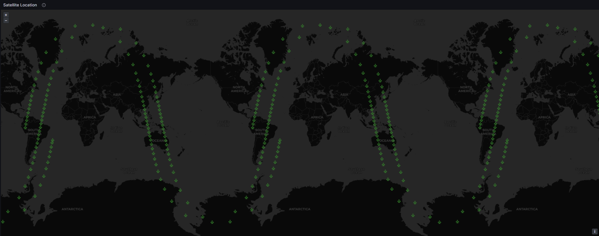
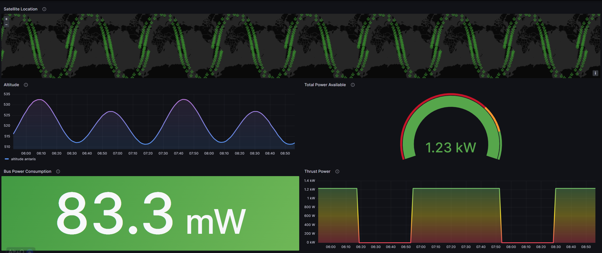

Work Overview:
The task was to build a Dashboard so consumers who wanted to track a satellite's parameters visually could have easy access to it. I used Grafana Dashboards which is an open-source software along with a combination of InfluxDB and MySQL to store the satellite data.
Working of the Dashboard:
The image on the right is the path a Low Earth Orbit (LEO) satellite took in less than a day captured and displayed on the Dashboard. For this dashboard, I used the six Orbital parameters of a known satellite in NASA's open-source General Mission Analysis Tool to generate the appropriate parameters for the satellite.

This includes parameters such as Altitude, Latitude, Longitude, Dry Mass, etc. This can also be used to get an estimate of how much fuel there is, if the solar panels are in charge or discharge state, how much power is left, how much power is being consumed and many more analytics can be derived from it.
This script file generated can then be parsed using Python to retrieve the required values and load it onto a CSV file so it can be saved and documented if required. The CSV file generated in this case would be unannotated and using it directly to store in a Database is problematic. Therefore the CSV file is then converted to an annotated form and then queried again to store in a database like MySQL or InfluxDB. In this case, I used InfluxDB mainly because of its better integration with Grafana Dashboards.

The above image is the dashboard I made for the sample parameters derived from GMAT. It Includes the parameters of Altitude, Total Power remaining in the satellite's batteries, the amount of power consumed by the Bus connecting the electrical components and the amount of power that can be used for the thrust of the satellite. The thrust power as noticed in the graph reduces as time progresses when the satellite's panels are not facing the sun.
Once the data is loaded into the Databases, it can be linked with the Grafana Interface. As both servers would be running on the cloud, a combination of InfluxDB and Grafana can be used to monitor this data in Real-Time. Using Python APIs in the beta stage of GMAT, I was able to run scripts with the API and load the data into the databases instantaneously. Once both the servers are running, using the "Flux" query language, the appropriate parameters can be derived from the database and displayed on the Dashboard as necessary.
Using a Dashboard this way, gives us more flexibility to monitor data in real-time for any discrepancies or even by a customer who wants to simulate scenarios based on which they can make a decision on what parameters they should use for a product design.
Software Used:
- Grafana Dashboards
- Influx DB
- General Mission Analysis Tool (GMAT)
Languages Used: